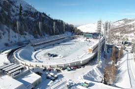

Charyn Canyon

Charyn Canyon is often called the "younger brother" of the Grand Canyon. It is a unique natural formation with breathtaking rock formations.
Medeu Ice Rink
Medeu is a famous high-altitude ice-skating rink near Almaty, known for its world records in speed skating.
Burabay National Park

Burabay is a picturesque natural park with forests, mountains, and crystal-clear lakes, making it a popular destination for tourism and recreation.